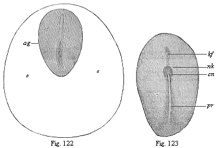

THE EVOLUTION OF MAN
Volume I
CHAPTER XIII
DORSAL BODY AND VENTRAL BODY
The earliest stages of the human embryo are, for the reasons already given, either quite unknown or only imperfectly known to us. But as the subsequent embryonic forms in man behave and develop just as they do in all the other mammals, there cannot be the slightest doubt that the preceding stages also are similar. We have been able to see in the cœlomula of the human embryo (Fig. 97), by transverse sections through its primitive mouth, that its two cœlom-pouches are developed in just the same way as in the rabbit (Fig. 96); moreover, the peculiar course of the gastrulation is just the same.

Fig. 120—Embryonic vesicle of a seven-days-old rabbit with oval embryonic shield (ag). A seen from above, B from the side. (From Kölliker.) ag dorsal shield or embryonic spot. In B the upper half of the vesicle is made up of the two primary germinal layers, the lower (up to ge) only from the outer layer. |
The germinative area forms in the human embryo in the same way as in the other mammals, and in the middle part of this we have the embryonic shield, the purport of which we considered in Chapter XII. The next changes in the embryonic disk, or the “embryonic spot,” take place in corresponding fashion. These are the changes we are now going to consider more closely.
The chief part of the oval embryonic shield is at first the narrow hinder end; it is in the middle line of this that the primitive streak appears (Fig. 121 ps). The narrow longitudinal groove in it—the so-called “primitive groove”—is, as we have seen, the primitive mouth of the gastrula. In the gastrula-embryos of the mammals, which are much modified cenogenetically, this cleft-shaped prostoma is lengthened so much that it soon traverses the whole of the hinder half of the dorsal shield; as we find in a rabbit embryo of six to eight days (Fig. 122 pr). The two swollen parallel borders that limit this median furrow are the side lips of the primitive mouth, right and left. In this way the bilateral-symmetrical type of the vertebrate becomes pronounced. The subsequent head of the amniote is developed from the broader and rounder fore-half of the dorsal shield.
In this fore-half of the dorsal shield a median furrow quickly makes its appearance (Fig. 123 rf). This is the broader dorsal furrow or medullary groove, the first beginning of the central nervous system. The two parallel dorsal or medullary swellings that enclose it grow
[ 126 ]
together over it afterwards, and form the medullary tube. As is seen in transverse sections, it is formed only of the outer germinal layer (Figs. 95 and 136). The lips of the primitive mouth, however, lie, as we know, at the important point where the outer layer bends over the inner, and from which the two cœlom pouches grow between the primary germinal layers.

Fig. 121—Oval embryonic shield of the rabbit (A of six days eighteen hours, B of eight days). (From Kölliker.) ps primitive streak, pr primitive groove, arg area germinalis, sw sickle-shaped germinal growth, |

Fig. 122—Dorsal shield (ag) and germinative area of a rabbit-embryo of eight days. (From Kölliker.) pr primitive groove, rf dorsal furrow.
Fig. 123.—Embryonic shield of a rabbit of eight days. (From Van Beneden.) pr primitive groove, cn canalis neurentericus, nk nodus neurentericus (or “Hensen’s ganglion”), kf head-process (chorda). |
Thus the median primitive furrow (pr)
[ 127 ]
in the hind-half and the median medullary furrow (Rf) in the fore-half of the oval shield are totally different structures, although the latter seems to a superficial observer to be merely the forward continuation of the former. Hence they were formerly always confused. This error was the more pardonable as immediately afterwards the two grooves do actually pass into each other in a very remarkable way. The point of transition is the remarkable neurenteric canal (Fig. 124 cn). But the direct connection which is thus established does not last long; the two are soon definitely separated by a partition.
 Fig. 124—Longitudinal section of the cœlomula of amphioxus (from the left). i entoderm, d primitive gut, cn medullary duct, n nerve tube, m mesoderm, s first primitive segment, c cœlom-pouches. (From Hatschek.)
Fig. 124—Longitudinal section of the cœlomula of amphioxus (from the left). i entoderm, d primitive gut, cn medullary duct, n nerve tube, m mesoderm, s first primitive segment, c cœlom-pouches. (From Hatschek.) |
The enigmatic neurenteric canal is a very old embryonic organ, and of great phylogenetic interest, because it arises in the same way in all the chordonia (both tunicates and vertebrates). In every case it touches or embraces like an arch the posterior end of the chorda, which has been developed here in front out of the middle line of the primitive gut (between the two cœlom-folds of the sickle groove) (“head-process,” Fig. 123 kf). These very ancient and strictly hereditary structures, which have no physiological significance to-day, deserve (as “rudimentary organs”) our closest attention. The tenacity with which the useless neurenteric canal has been transmitted down to man through the whole series of vertebrates is of equal interest for the theory of descent in general, and the phylogeny of the chordonia in particular.
The connection which the neurenteric canal (Fig. 123 cn) establishes between the dorsal nerve-tube (n) and the ventral gut-tube (d) is seen very plainly in the amphioxus in a longitudinal section of the cœlomula, as soon as the primitive mouth is completely closed at its hinder end. The medullary tube has still at this stage an opening at the forward end, the neuroporus Fig. 83 np). This opening also is afterwards closed. There are then two completely closed canals over each other—the medullary tube above and the gastric tube below, the two being separated by the chorda. The same features as in the acrania are exhibited by the related tunicates, the ascidiæ.
 Fig. 125—Longitudinal section of the chordula of a frog. (From Balfour.) nc nerve-tube, x canalis neurentericus, al alimentary canal, yk yelk-cells, m mesoderm.
Fig. 125—Longitudinal section of the chordula of a frog. (From Balfour.) nc nerve-tube, x canalis neurentericus, al alimentary canal, yk yelk-cells, m mesoderm. |
Again, we find the neurenteric canal in just the same form and situation in the amphibia. A longitudinal section of a young tadpole (Fig. 125) shows how we may penetrate from the still open primitive mouth (x) either into the wide primitive gut-cavity (al) or the narrow overlying nerve-tube. A little later, when the primitive mouth is closed, the narrow neurenteric canal (Fig. 126 ne) represents the arched connection between the dorsal medullary canal (mc) and the ventral gastric canal.
In the amniotes this original curved form of the neurenteric canal cannot be found at first, because here the primitive mouth travels completely over to the dorsal surface of the gastrula, and is converted into the longitudinal furrow we call the primitive groove. Hence the primitive groove (Fig. 128 pr), examined from above, appears to be the straight
[ 128 ]
continuation of the fore-lying and younger medullary furrow (me). The divergent hind legs of the latter embrace the anterior end of the former. Afterwards we have the complete closing of the primitive mouth, the dorsal swellings joining to form the medullary tube and growing over it. The neurenteric canal then leads directly, in the shape of a narrow arch-shaped tube (Fig. 129 ne), from the medullary tube (sp) to the gastric tube (pag). Directly in front of it is the latter end of the chorda (cli).
 Fig. 126—Longitudinal section of a frog-embryo. (From Goette.) m mouth, l liver, an anus, ne canalis neurentericus, mc medullary-tube, pn pineal body (epiphysis), ch chorda.
Fig. 126—Longitudinal section of a frog-embryo. (From Goette.) m mouth, l liver, an anus, ne canalis neurentericus, mc medullary-tube, pn pineal body (epiphysis), ch chorda. |
While these important processes are taking place in the axial part of the dorsal shield, its external form also is changing. The oval form (Fig. 117) becomes like the sole of a shoe or sandal, lyre-shaped or finger-biscuit shaped (Fig. 130). The middle third does not grow in width as quickly as the posterior, and still less than the anterior third; thus the shape of the permanent body becomes somewhat narrow at the waist. At the same time, the oval form of the germinative area returns to a circular shape, and the inner pellucid area separates more clearly from the opaque outer area (Fig. 131 a). The completion of the circle in the area marks the limit of the formation of blood-vessels in the mesoderm.

Figs. 127 and 128—Dorsal shield of the chick. (From Balfour.) The medullary furrow (me), which is not yet visible in Fig. 130, encloses with its hinder end the fore end of the primitive groove (pr) in Fig. 131.) |
The characteristic sandal-shape of the dorsal shield, which is determined by the narrowness of the middle part, and which is compared to a violin, lyre, or shoe-sole, persists for a long time in all the amniotes. All mammals, birds, and reptiles have substantially the same construction at this stage, and even for a longer or shorter
[ 129 ]
period after the division of the primitive segments into the cœlom-folds has begun (Fig. 132). The human embryonic shield assumes the sandal-form in the second week of development; towards the end of the week our sole-shaped embryo has a length of about one-twelfth of an inch (Fig. 133).
 Fig. 129—Longitudinal section of the hinder end of a chick. (From Balfour.) sp medullary tube, connected with the terminal gut (pag) by the neurenteric canal (ne), ch chorda, pr neurenteric (or Hensen’s) ganglion, al allantois, ep ectoderm, hy entoderm, so parietal layer, sp visceral layer, an anus-pit, am amnion.
Fig. 129—Longitudinal section of the hinder end of a chick. (From Balfour.) sp medullary tube, connected with the terminal gut (pag) by the neurenteric canal (ne), ch chorda, pr neurenteric (or Hensen’s) ganglion, al allantois, ep ectoderm, hy entoderm, so parietal layer, sp visceral layer, an anus-pit, am amnion. |
The complete bilateral symmetry of the vertebrate body is very early indicated in the oval form of the embryonic shield (Fig. 117) by the median primitive streak; in the sandal-form it is even more pronounced (Figs. 131–135). In the lateral parts of the embryonic shield a darker central and a lighter peripheral zone become more obvious; the former is called the stem-zone (Fig. 134 stz), and the latter the parietal zone (pz); from the first we get the dorsal and from the second the ventral half of the body-wall. The stem-zone of the amniote embryo would be called more appropriately the dorsal zone or dorsal shield; from it develops the whole of the dorsal half of the later body (or permanent body)—that is to say, the dorsal body (episoma). Again, it would be better to call the “parietal zone” the ventral zone or ventral shield; from it develop the ventral “lateral plates,” which afterwards separate from the embryonic vesicle and form the ventral body (hyposoma)—that is to say, the ventral half of the permanent body, together with the body-cavity and the gastric canal that it encloses.
 Fig. 130—Germinal area or germinal disk of the rabbit, with sole-shaped embryonic shield, magnified. The clear circular field (d) is the opaque area. The pellucid area (c) is lyre-shaped, like the embryonic shield itself (b). In its axis is seen the dorsal furrow or medullary furrow (a). (From Bischoff.)
Fig. 130—Germinal area or germinal disk of the rabbit, with sole-shaped embryonic shield, magnified. The clear circular field (d) is the opaque area. The pellucid area (c) is lyre-shaped, like the embryonic shield itself (b). In its axis is seen the dorsal furrow or medullary furrow (a). (From Bischoff.) |
The sole-shaped germinal shields of all the amniotes are still, at the stage of construction which Fig. 134 illustrates in the rabbit and Fig. 135 in the opossum, so like each other that we can either not distinguish them at all or only by means of quite subordinate peculiarities in the size of the various parts. Moreover, the human sandal-shaped embryo cannot at this stage be distinguished from those of other mammals, and it particularly resembles that of the rabbit. On the other hand, the outer form of these flat sandal-shaped embryos is very different from the corresponding form of the lower animals, especially the acrania (amphioxus). Nevertheless, the body is just the same in the essential features of its structure as that we find in the chordula of the latter (Figs. 83–86), and in the embryonic forms which immediately develop from it. The striking external difference is here again due to the fact that in the palingenetic embryos of the amphioxus (Figs. 83, 84) and the amphibia (Figs. 85, 86) the gut-wall and body-wall form closed tubes from the first, whereas in the cenogenetic embryos of the amniotes they are forced to expand leaf-wise on the surface owing to the great extension of the food-yelk.
[ 130 ]
It is all the more notable that the early separation of dorsal and ventral halves takes place in the same rigidly hereditary fashion in all the vertebrates. In both the acrania and the craniota the dorsal body is about this period separated from the ventral body. In the middle part of the body this division has already taken place by the construction of the chorda between the dorsal nerve-tube and the ventral canal. But in the outer or lateral part of the body it is only brought about by the division of the coelom-pouches into two sections—a dorsal episomite (dorsal segment or provertebra) and a ventral hyposomite (or ventral segment) by a frontal constriction. In the amphioxus each of the former makes a muscular pouch, and each of the latter a sex-pouch or gonad.

Fig. 131—Embryo of the opossum, sixty hours old, one-sixth of an inch in diameter. (From Selenka) b the globular embryonic vesicle, a the round germinative area, b limit of the ventral plates, r dorsal shield, v its fore part, u the first primitive segment, ch chorda, chr its fore-end, pr primitive groove (or mouth).
Fig. 132—Sandal-shaped embryonic shield of a rabbit of eight days, with the fore part of the germinative area (ao opaque, ap pellucid area). (From Kölliker.) rf dorsal furrow, in the middle of the medullary plate, h, pr primitive groove (mouth), stz dorsal (stem) zone, pz ventral (parietal) zone. In the narrow middle part the first three primitive segments may be seen. |
These important processes of differentiation in the mesoderm, which we will consider more closely in the next chapter, proceed step by step with interesting changes in the ectoderm, while the entoderm changes little at first. We can study these processes best in transverse sections, made vertically to the surface through the sole-shaped embryonic shield. Such a transverse section of a chick embryo, at the end of the first day of incubation, shows the gut-gland layer as a very simple epithelium, which is spread like a leaf over the outer surface of the food-yelk (Fig. 92). The chorda (ch) has separated from the dorsal middle line of the entoderm; to the right and left of it are the two halves of the mesoderm, or the two cœlom-folds. A narrow cleft in the latter indicates the body-cavity (uwh); this separates the two plates of the cœlom-pouches, the lower (visceral) and upper (parietal). The broad dorsal furrow (rf) formed by the medullary plate (m) is still wide open, but is divided from the lateral horn-plate
[ 131 ]
(h) by the parallel medullary swellings, which eventually close.

Fig. 133—Human embryo at the sandal-stage, one-twelfth of an inch long, from the end of the second week, magnified. (From Count Spee.)
Fig. 134—Sandal-shaped embryonic shield of a rabbit of nine days. (From K¨olliker.) (Back view from above.) stz stem-zone or dorsal shield (with eight pairs of primitive segments), pz parietal or ventral zone, ap pellucid area, af amnion-fold, h heart, ph pericardial cavity, vo omphalo-mesenteric vein, ab eye-vesicles, vh fore brain, mh middle brain, hh hind brain, uw primitive segments (or vertebræ). |
During these processes important changes are taking place in the outer germinal layer (the “skin-sense layer”). The continued rise and growth of the dorsal swellings causes their higher parts to bend together at their free borders, approach nearer and nearer (Fig. 136 w), and finally unite. Thus in the end we get from the open dorsal furrow, the upper cleft of which becomes narrower and narrower, a closed cylindrical tube (Fig. 137 mr). This tube is of the utmost importance; it is the beginning of the central nervous system, the brain and spinal marrow, the medullary tube. This embryonic fact was formerly looked upon as very mysterious. We shall see presently that in the light of the theory of descent it is a thoroughly natural process. The phylogenetic explanation of it is that the central nervous system is the organ by means of which all intercourse with the outer world, all psychic action and sense-perception, are accomplished; hence it was bound to develop originally from the outer and upper surface of the body, or from the outer skin. The medullary tube afterwards separates completely from the outer germinal layer, and is surrounded by the middle parts of the provertebræ and forced inwards (Fig. 146). The remaining portion of the skin-sense layer (Fig. 93 h) is now called the horn-plate or horn-layer, because from it is developed the whole of the outer skin or epidermis, with all its horny appendages (nails, hair, etc.).
A totally different organ, the prorenal
[ 132 ]
(primitive kidney) duct (ung), is found to be developed at an early stage from the ectoderm. This is originally a quite simple, tube-shaped, lengthy duct, or straight canal, which runs from front to rear at each side of the provertebræ (on the outer side, Fig. 93 ung). It originates, it seems, out of the horn-plate at the side of the medullary tube, in the gap that we find between the provertebral and the lateral plates. The prorenal duct is visible in this gap even at the time of the severance of the medullary tube from the horn-plate. Other observers think that the first trace of it does not come from the skin-sense layer, but the skin-fibre layer.

Fig. 135—Sandal-shaped embryonic shield of an opossum (Didelphys), three days old. (From Selenka.) (Back view from above.) stz stem-zone or dorsal shield (with eight pairs of primitive segments), pz parietal or ventral zone, ap pellucid area, ao opaque area, hh halves of the heart, v fore-end, h hind-end. In the median line we see the chorda (ch) through the transparent medullary tube (m). u primitive segment, pr primitive streak (or primitive mouth). |
The inner germinal layer, or the gut-fibre layer (Fig. 93 dd), remains unchanged during these processes. A little later, however, it shows a quite flat, groove-like depression in the middle line of the embryonic shield, directly under the chorda. This depression is called the gastric groove or furrow. This at once indicates the future lot of this germinal layer. As this ventral groove gradually deepens, and its lower edges bend towards each other, it is formed into a closed tube,
[ 133 ]
the alimentary canal, in the same way as the medullary groove grows into the medullary tube. The gut-fibre layer (Fig. 137 f), which lies on the gut-gland layer (d), naturally follows it in its folding. Moreover, the incipient gut-wall consists from the first of two layers, internally the gut-gland layer and externally the gut-fibre layer.
The formation of the alimentary canal resembles that of the medullary tube to this extent—in both cases a straight groove or furrow arises first of all in the middle line of a flat layer. The edges of this furrow then bend towards each other, and join to form a tube (Fig. 137). But the two processes are really very different. The medullary tube closes in its whole length, and forms a cylindrical tube, whereas the alimentary canal remains open in the middle, and its cavity continues for a long time in connection with the cavity of the embryonic vesicle. The open connection between the two cavities is only closed at a very late stage, by the construction of the navel. The closing of the medullary tube is effected from both sides, the edges of the groove joining together from right and left. But the closing of the alimentary canal is not only effected from right and left, but also from front and rear, the edges of the ventral groove growing together from every side towards the navel. Throughout the three higher classes of vertebrates the whole of this process of the construction of the gut is closely connected with the formation of the navel, or with the separation of the embryo from the yelk-sac or umbilical vesicle.
In order to get a clear idea of this, we must understand carefully the relation of the embryonic shield to the germinative area and the embryonic vesicle. This is done best by a comparison of the five stages which are shown in longitudinal section in Figs. 138–142. The embryonic shield (c), which at first projects very slightly over the surface of the germinative area, soon begins to rise higher above it, and to separate from the embryonic vesicle. At this point the embryonic shield, looked at from the dorsal surface, shows still the original simple sandal-shape (Figs. 133–135). We do not yet see any trace of articulation into head, neck, trunk, etc., or limbs. But the embryonic shield has increased greatly in thickness, especially in the anterior part. It now has the appearance of a thick, oval swelling, strongly curved over the surface of the germinative area. It begins to sever completely from the embryonic vesicle, with which it is connected at the ventral surface. As this severance proceeds, the back bends more and more; in proportion as the embryo grows the embryonic vesicle decreases, and at last it merely hangs as a small vesicle from the belly of the embryo (Fig. 142 ds). In consequence of the growth-movements which cause this severance, a groove-shaped depression is formed at the surface of the vesicle, the limiting furrow, which surrounds the vesicle in the shape of a pit, and a circular mound or dam (Fig. 139 ks) is formed at the outside of this pit by the elevation of the contiguous parts of the germinal vesicle.
 Fig. 136—Transverse section of the embryonic disk of a chick at the end of the first day of incubation, magnified. The edges of the medullary plate (m), the medullary swellings (w), which separate the medullary from the horn-plate (h), are bending towards each other. At each side of the chorda (ch) the primitive segment plates (u) have separated from the lateral plates (sp). A gut-gland layer. (From Remak.)
Fig. 136—Transverse section of the embryonic disk of a chick at the end of the first day of incubation, magnified. The edges of the medullary plate (m), the medullary swellings (w), which separate the medullary from the horn-plate (h), are bending towards each other. At each side of the chorda (ch) the primitive segment plates (u) have separated from the lateral plates (sp). A gut-gland layer. (From Remak.) |
In order to understand clearly this important process, we may compare the embryo to a fortress with its surrounding rampart and trench. The ditch consists of the outer part of the germinative area, and comes to an end at the point where the area passes into the vesicle. The important fold of the middle germinal layer that brings about the formation of the body-cavity spreads beyond the borders of the embryo over the whole germinative area. At first this middle layer reaches as far as the germinative area; the whole of the rest of the embryonic vesicle consists in the beginning only of the two original limiting layers, the outer and inner germinal layers. Hence, as far as the germinative area extends the germinal layer splits into the two plates we have already recognised in it, the outer skin-fibre layer and the inner gut-fibre layer. These two plates diverge considerably, a clear fluid gathering between them (Fig. 140 am). The inner plate, the gut-fibre layer, remains on the inner layer of the embryonic vesicle (on the gut-gland layer). The
[ 134 ]
outer plate, the skin-fibre layer, lies close on the outer layer of the germinative area, or the skin-sense layer, and separates together with this from the embryonic vesicle. From these two united outer plates is formed a continuous membrane. This is the circular mound that rises higher and higher round the whole embryo, and at last joins above it (Figs. 139–142 am). To return to our illustration of the fortress, we must imagine the circular rampart to be extraordinarily high and towering far above the fortress. Its edges bend over like the combs of an overhanging wall of rock that would enclose the fortress; they form a deep hollow, and at last join together above. In the end the fortress lies entirely within the hollow that has been formed by the growth of the edges of this large rampart.

Fig. 137—Three diagrammatic transverse sections of the embryonic disk of the higher vertebrate, to show the origin of the tubular organs from the bending germinal layers. In Fig. A the medullary tube (n) and the alimentary canal (a) are still open grooves. In Fig. B the medullary tube (n) and the dorsal wall are closed, but the alimentary canal (a) and the ventral wall are open; the prorenal ducts (u) are cut off from the horn-plate (h) and internally connected with segmental prorenal canals. In Fig. C both the medullary tube and the dorsal wall above and the alimentary canal and ventral wall below are closed. All the open grooves have become closed tubes; the primitive kidneys are directed inwards. The letters have the same meaning in all three figures: h skin-sense layer, n medullary tube, u prorenal ducts, x axial rod, s primitive-vertebra, r dorsal wall, b ventral wall, c body-cavity or cœloma, f gut-fibre layer, t primitive artery (aorta), v primitive vein (subintestinal vein), d gut-fibre layer, a alimentary canal. |
As the two outer layers of the germinative area thus rise in a fold about the embryo, and join above it, they come at last to form a spacious sac-like membrane about it. This envelope takes the name of the germinative membrane, or water-membrane, or amnion (Fig. 142 am). The embryo floats in a watery fluid, which fills the space between the embryo and the amnion, and is called the amniotic fluid (Figs. 141, 142 ah). We will deal with this remarkable formation and with the allantois later on (Chapter XV). In front of the allantois the yelk-sac or umbilical vesicle (ds), the remainder of the original embryonic vesicle, starts from the open belly of the embryo (Fig. 138 kh). In more advanced embryos, in which the gastric wall and the ventral wall are nearly closed, it hangs out of the navel-opening in the shape of a small vesicle with a stalk (Figs. 141, 142 ds). The more the embryo grows, the smaller becomes the vitelline (yelk) sac. At first the embryo looks like a small appendage of the large embryonic vesicle. Afterwards it is the yelk-sac, or the remainder of the embryonic vesicle, that seems a small pouch-like appendage of the embryo (Fig. 142 ds). It ceases to have any significance in the end. The very wide opening, through which the gastric cavity at first communicates with the umbilical vesicle, becomes narrower and narrower, and at last disappears altogether. The navel, the small pit-like depression that we find in the developed man in the middle of the abdominal wall, is the spot at which the remainder of the embryonic vesicle (the umbilical vesicle) originally entered into the ventral cavity, and joined on to the growing gut.
The origin of the navel coincides with the complete closing of the external ventral wall. In the amniotes the ventral wall originates in the same way as the dorsal wall. Both are formed substantially from the skin-fibre layer, and externally covered with the horn-plate, the border section of the skin-sense layer. Both come into
[ 135 ]

Figs. 138–142—Five diagrammatic longitudinal sections of the maturing mammal embryo and its envelopes. In Figs. 138–141 the longitudinal section passes through the sagittal or middle plane of the body, dividing the right and left halves; in Fig. 142 the embryo is seen from the left side. In Fig. 138 the tufted it prochorion (dd') encloses the germinal vesicle, the wall of which consists of the two primary layers. Between the outer (a) and inner (i) layer the middle layer (m) has been developed in the region of the germinative area. In Fig. 139 the embryo (e) begins to separate from the embryonic vesicle (ds), while the wall of the amnion-fold rises about it (in front as head-sheath, ks, behind as tail-sheath, ss). In Fig. 140 the edges of the amniotic fold (am) rise together over the back of the embryo, and form the amniotic cavity (ah); as the embryo separates more completely from the embryonic vesicle (ds) the alimentary canal (dd) is formed, from the hinder end of which the allantois grows (al). In Fig. 141 the allantois is larger; the yelk-sac (ds) smaller. In Fig. 142 the embryo shows the gill-clefts and the outline of the two legs; the chorion has formed branching villi (tufts.) In all four figures e=embryo, a outer germinal layer, m middle germinal layer, i inner germinal layer, am amnion (ks head-sheath, ss tail-sheath), ah amniotic cavity, as amniotic sheath of the umbilical cord, kh embryonic vesicle, ds yelk-sac (umbilical vesicle), dg vitelline duct, df gut-fibre layer, dd gut-gland layer, al allantois, vl=hh place of heart, d vitelline membrane (ovolemma or prochorion), d' tufts or villi of same, sh serous membrane (serolemma), sz tufts of same, ch chorion, chz tufts or villi, st terminal vein, r pericœlom or serocœlom (the space, filled with fluid, between the amnion and chorion). (From Kölliker.) |
[ 136 ]
existence by the conversion of the four flat germinal layers of the embryonic shield into a double tube by folding from opposite directions; above, at the back, we have the vertebral canal which encloses the medullary tube, and below, at the belly, the wall of the body-cavity which contains the alimentary canal (Fig. 137).
 |
Figs. 143–146—Transverse sections of embryos (of chicks). Fig. 143 of the second, Fig. 144 of the third, Fig. 145 of the fourth, and Fig. 146 of the fifth day of incubation. Fig. 143–145 from Kölliker, magnified; Fig. 146 from Remak, magnified. h horn-plate, mr medullary tube, ung prorenal duct, un prorenal vesicles, hp skin-fibre layer, m=mu=mp muscle-plate, uw provertebral plate (wh cutaneous rudiment of the body of the vertebra, wb of the arch of the vertebra, wq the rib or transverse continuation), uwh provertebral cavity, ch axial rod or chorda, sh chorda-sheath, bh ventral wall, g hind and v fore root of the spinal nerves, a=af=am amniotic fold, p body-cavity or cœloma, df gut-fibre layer, ao primitive aortas, sa secondary aorta, vc cardinal veins, d=dd gut-gland layer, dr gastric groove. In Fig. 143 the larger part of the right half, in Fig. 144 the larger part of the left half, of the section is omitted. Of the yelk-sac or remainder of the embryonic vesicle only a small piece of the wall is indicated below. |
We will consider the formation of the dorsal wall first, and that of the ventral wall afterwards (Figs. 143–147). In the middle of the dorsal surface of the embryo there is originally, as we already know, the medullary (mr) tube directly underneath the horn-plate (h), from the middle part of which it has been developed. Later, however, the provertebral plates (uw) grow over from the right and left between these originally connected parts (Figs. 145, 146). The upper and inner edges of the two provertebral plates push between the horn-plate and medullary tube, force them away from each other, and finally join between them in a seam that corresponds to the middle line of the back. The coalescence of these two dorsal plates and the closing in the middle of the dorsal wall take place in the same way as the medullary tube, which is henceforth enclosed by the vertebral tube. Thus is formed the dorsal wall, and the medullary tube takes up a position inside the body. In the same way the provertebral mass grows afterwards round the chorda, and forms the vertebral column. Below this the inner and outer edge of the provertebral plate splits on each side into two horizontal plates, of which the upper pushes between the chorda and medullary tube, and the lower between the chorda and gastric tube. As the plates meet from both sides above and below the chorda, they completely enclose it, and so form the tubular, outer chord-sheath, the sheath from which the vertebral column is formed (perichorda, Fig. 137 C, s; Figs. 145 uwh, 146).
We find in the construction of the ventral wall precisely the same processes
[ 137 ]
 |
Figs. 143–146—Transverse sections of embryos (of chicks). Fig. 143 of the second, Fig. 144 of the third, Fig. 145 of the fourth, and Fig. 146 of the fifth day of incubation. Fig. 143–145 from Kölliker, magnified; Fig. 146 from Remak, magnified. h horn-plate, mr medullary tube, ung prorenal duct, un prorenal vesicles, hp skin-fibre layer, m=mu=mp muscle-plate, uw provertebral plate (wh cutaneous rudiment of the body of the vertebra, wb of the arch of the vertebra, wq the rib or transverse continuation), uwh provertebral cavity, ch axial rod or chorda, sh chorda-sheath, bh ventral wall, g hind and v fore root of the spinal nerves, a=af=am amniotic fold, p body-cavity or cœloma, df gut-fibre layer, ao primitive aortas, sa secondary aorta, vc cardinal veins, d=dd gut-gland layer, dr gastric groove. In Fig. 143 the larger part of the right half, in Fig. 144 the larger part of the left half, of the section is omitted. Of the yelk-sac or remainder of the embryonic vesicle only a small piece of the wall is indicated below. |
as in the formation of the dorsal wall (Fig. 137 B, Fig. 144 hp, Fig. 146 bh). It is formed on the flat embryonic shield of the amniotes from the upper plates of the parietal zone. The right and left parietal plates bend downwards towards each other, and grow round the gut in the same way as the gut itself closes. The outer part of the lateral plates forms the ventral wall or the lower wall of the body, the two lateral plates bending considerably on the inner side of the amniotic fold, and growing towards each other from right and left. While the alimentary canal is closing, the body-wall also closes on all sides. Hence the ventral wall, which encloses the whole ventral cavity below, consists of two parts, two lateral plates that bend towards each other. These approach each other all along, and at last meet at the navel. We ought, therefore, really to distinguish two navels, an inner and an outer one. The internal or intestinal navel is the definitive point of the closing of the gut wall, which puts an end to the open communication between the ventral cavity and the cavity of the yelk-sac (Fig. 105). The external navel in the skin is the definitive point of the closing of the ventral wall; this is visible in the developed body as a small depression.
[ 138 ]
With the formation of the internal navel and the closing of the alimentary canal is connected the formation of two cavities, which we call the capital and the pelvic sections of the visceral cavity. As the embryonic shield lies flat on the wall of the embryonic vesicle at first, and only gradually separates from it, its fore and hind ends are independent in the beginning; on the other hand, the middle part of the ventral surface is connected with the yelk-sac by means of the vitelline or umbilical duct (Fig. 147 m). This leads to a notable curving of the dorsal surface; the head-end bends downwards towards the breast and the tail-end towards the belly. We see this very clearly in the excellent old diagrammatic illustration given by Baer (Fig. 147), a median longitudinal section of the embryo of the chick, in which the dorsal body or episoma is deeply shaded. The embryo seems to be trying to roll up, like a hedgehog protecting itself from its pursuers. This pronounced curve of the back is due to the more rapid growth of the convex dorsal surface, and is directly connected with the severance of the embryo from the yelk-sac. The further bending of the embryo leads to the formation of the “head-cavity” of the gut (Fig. 148 above D) and a similar one at the tail, known as its “pelvic cavity.”

| Fig. 147—Median longitudinal section of the embryo of a chick (fifth day of incubation), seen from the right side (head to the right, tail to the left). Dorsal body dark, with convex outline. d gut, o mouth, a anus, l lungs, h liver, g mesentery, v auricle of the heart, k ventricle of the heart, b arch of the arteries, t aorta, c yelk-sac, m vitelline (yelk) duct, u allantois, r pedicle (stalk) of the allantois, n amnion, w amniotic cavity, s serous membrane. (From Baer.) |
As a result of these processes the embryo attains a shape that may be compared to a wooden shoe, or, better still, to an overturned canoe. Imagine a canoe or boat with both ends rounded and a small covering before and behind; if this canoe is turned upside down, so that the curved keel is uppermost, we have a fair picture of the canoe-shaped embryo (Fig. 147). The upturned convex keel corresponds to the middle line of the back; the small chamber underneath the fore-deck represents the capital cavity, and the small chamber under the rear-deck the pelvic chamber of the gut (cf. Fig. 140).
The embryo now, as it were, presses into the outer surface of the embryonic vesicle with its free ends, while it moves away from it with its middle part. As a result of this change the yelk-sac becomes henceforth only a pouch-like outer appendage at the middle of the ventral wall. The ventral appendage, growing smaller and smaller, is afterwards called the umbilical (navel) vesicle. The cavity of the yelk-sac or umbilical vesicle communicates with the corresponding visceral cavity by a wide opening, which gradually contracts into a narrow and long canal, the vitelline (yelk) duct (ductus vitellinus, Fig. 147 m). Hence, if we were to imagine ourselves in
[ 139 ]
the cavity of the yelk-sac, we could get from it through the yelk-duct into the middle and still wide open part of the alimentary canal. If we were to go forward from there into the head-part of the embryo, we should reach the capital cavity of the gut, the fore-end of which is closed up.
The reader will ask: “Where are the mouth and the anus?” These are not at first present in the embryo. The whole of the primitive gut-cavity is completely closed, and is merely connected in the middle by the vitelline duct with the equally closed cavity of the embryonic vesicle (Fig. 140). The two later apertures of the alimentary canal—the anus and the mouth—are secondary constructions, formed from the outer skin. In the horn-plate, at the spot where the mouth is found subsequently, a pit-like depression is formed, and this grows deeper and deeper, pushing towards the blind fore-end of the capital cavity; this is the mouth-pit. In the same way, at the spot in the outer skin where the anus is afterwards situated a pit-shaped depression appears, grows deeper and deeper, and approaches the blind hind-end of the pelvic cavity; this is the anus-pit. In the end these pits touch with their deepest and innermost points the two blind ends of the primitive alimentary canal, so that they are now only separated from them by thin membranous partitions. This membrane finally disappears, and henceforth the alimentary canal opens in front at the mouth and in the rear by the anus (Figs. 141, 147). Hence at first, if we penetrate into these pits from without, we find a partition cutting them off from the cavity of the alimentary canal, which gradually disappears. The formation of mouth and anus is secondary in all the vertebrates.
 Fig. 148—Longitudinal section of the fore half of a chick-embryo at the end of the first day of incubation (seen from the left side). k head-plates, ch chorda. Above it is the blind fore-end of the ventral tube (m); below it the capital cavity of the gut. d gut-gland layer, df gut-fibre layer, h horn plate, hh cavity of the heart, hk heart-capsule, ks head-sheath, kk head-capsule. (From Remak.)
Fig. 148—Longitudinal section of the fore half of a chick-embryo at the end of the first day of incubation (seen from the left side). k head-plates, ch chorda. Above it is the blind fore-end of the ventral tube (m); below it the capital cavity of the gut. d gut-gland layer, df gut-fibre layer, h horn plate, hh cavity of the heart, hk heart-capsule, ks head-sheath, kk head-capsule. (From Remak.) |
During the important processes which lead to the formation of the navel, and of the intestinal wall and ventral wall, we find a number of other interesting changes taking place in the embryonic shield of the amniotes. These relate chiefly to the prorenal ducts and the first blood-vessels. The prorenal (primitive kidney) ducts, which at first lie quite flat under the horn-plate or epiderm (Fig. 93 ung), soon back towards each other in consequence of special growth movements (Figs. 143–145 ung). They depart more and more from their point of origin, and approach the gut-gland layer. In the end they lie deep in the interior, on either side of the mesentery, underneath the chorda, (Fig. 145 ung). At the same time, the two primitive aortas change their position (cf. Figs. 138–145 ao); they travel inwards underneath the chorda, and there coalesce at last to form a single secondary aorta, which is found under the rudimentary vertebral column (Fig. 145 ao). The cardinal veins, the first venous blood-vessels, also back towards each other, and eventually unite immediately above the rudimentary kidneys (Figs. 145 vc, 152 cav). In the same spot, at the inner side of the fore-kidneys, we soon see the first trace of the sexual organs. The most important part of this apparatus (apart from all its appendages) is the ovary in the female and the testicle
[ 140 ]

Fig. 149—Longitudinal section of a human embryo of the fourth week, one-fifth of an inch long, magnified. (From Kollmann.) |

Fig. 150—Transverse section of a human embryo of fourteen days. mr medullary tube, ch chorda. vu umbilical vein, mt myotome, mp middle plate, ug prorenal duct, lh body-cavity, e ectoderm, bh ventral skin, hf skin-fibre layer, df gut-fibre layer. (From Kollmann.)
Fig. 151—Transverse section of a shark-embryo (or young selachius). mr medullary tube, ch chorda, a aorta, d gut, vp principal (or subintestinal) vein, mt myotome, mm muscular mass of the provertebra, mp middle plate, ug prorenal duct, lh body-cavity, e ectoderm of the rudimentary extremities, mz mesenchymic cells, z point where the myotome and nephrotome separate. (From H. E. Ziegler.) |
[ 141 ]
in the male. Both develop from a small part of the cell-lining of the body-cavity, at the spot where the skin-fibre layer and gut-fibre layer touch. The connection of this embryonic gland with the prorenal ducts, which lie close to it and assume most important relations to it, is only secondary.

Fig. 152—Transverse section of a duck-embryo with twenty-four primitive segments. (From Balfour.) From a dorsal lateral joint of the medullary tube (spc) the spinal ganglia (spg) grow out between it and the horn-plate. ch chorda, ao double aorta, hy gut-gland layer, sp gut-fibre layer, with blood-vessels in section, ms muscle plate, in the dorsal wall of the myocœl (episomite). Below the cardinal vein (cav) is the prorenal duct (wd) and a segmental prorenal canal (st). The skin-fibre layer of the body-wall (so) is continued in the amniotic fold (am). Between the four secondary germinal layers and the structures formed from them there is formed embryonic connective matter with stellate cells and vascular structures (Hertwig’s “mesenchym”). |
Title and Contents
Glossary
Chapter XII
Chapter XIV
Figs. 1–209
Figs. 210–408